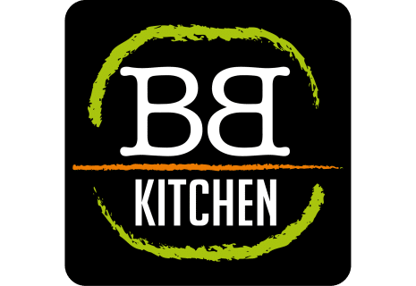

Ik heb 3 verschillende banen gehad, bij twee van de drie werk ik nog. Dat zijn de big bread kichen (snackbar) en "the valley"(tomatenkas). ik heb ook nog bij de Albert Heijn gewerkt maar daar ben ik deze zomer weg gegaan. Bij de snackbar sta ik het meest achter de kassa, maar ik bezorg ook. Ik werk er pas een maand en ik heb het er naar mijn zin. Ik werk al een paar jaar bij de tomatenkas, maar ik vind het nu niet zo leuk meer en ik zit te twijfelen of ik ontslag moet nemen.